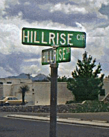
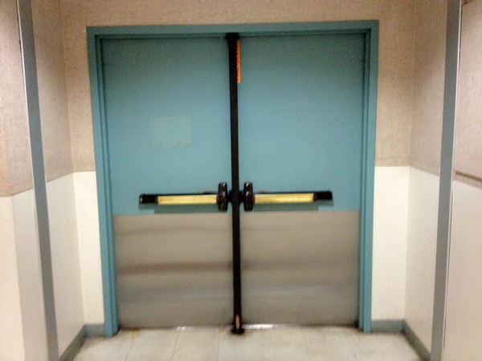
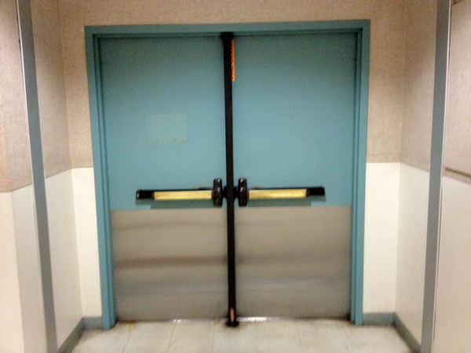
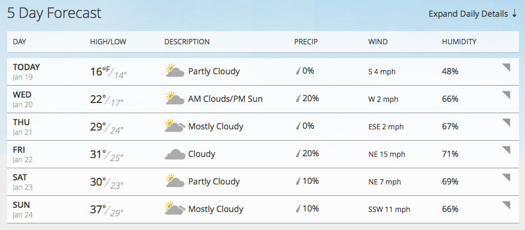
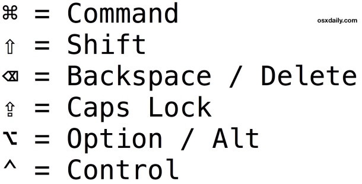
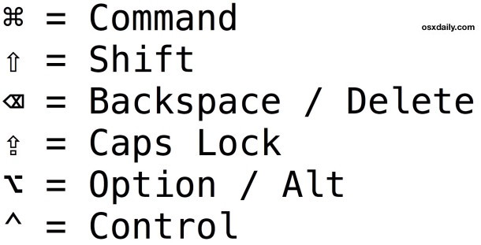

Elegance & Simplicity
Enhance communication by carefully selecting elements to
be emphasized
Applies to window layout, dialogue boxes, icons, etc.
Solve the problem completely, in a highly economical way

Here is a web page showing a wide assortment of US Road signs -
http://www.trafficsign.us/
Europe: http://www.reidsguides.com/t_au/t_au_road_signs.html
and http://www.ideamerge.com/motoeuropa/roadsigns/
and a good bad example: http://www.baddesigns.com/dontgo.html

and another good bad one, though this time its not the
sign's fault:
http://www.baddesigns.com/streetsn.html

Benefits of Simplicity:
- Approachability - rapidly apprehended and understood to
support immediate use
 


- Recognizability - less visual information, more easily
understood and remembered

- Immediacy - greater impact because they are recognized and
understood without conscious effort

- Usability - improving approachability and memorability enhance
usability
3 Principles of Simplicity
- elements must be unified
to produce a coherent whole

- parts, and the whole, must be refined to focus the viewer's attention on
the essential aspects
- fitness of
the solution to the communication problem must be ensured at
every level
Lets look at some different ways to show the current vs. expected weather



(and note that the darksky.net icons such as 'light snow' or
'rain' are animated to show the snow flakes falling


Common Errors:
- Clutter and visual noise - packing too much information /
control into a single screen makes it difficult to organize what
is there and how to move through it

- Interference between competing elements - the text in the
menus competes with the text in the menu accelerators, and
sometimes the text for the accelerators can be quite long -
using an icon for the accelerator keys makes the distinction
obvious (but then you have to learn the code for the
accelerator)
 

- Using explicit structure - adding extra boxes and
lines can help to organize the elements, but it is also a sign
that you are in trouble when over-used.
See the clutter and visual noise example above.

- Excessive detail and embellishment, including
3D and gadient display, may also make the text harder to read.

Techniques:
- Reducing a
design to its essence
- Regularizing
the elements of the design
- Combining elements for maximum leverage
Reduction:
Reinforce the message by removing non-essential elements
- Determine the essential qualities that should be conveyed by the design.
- Critically examine each element in the design and ask yourself
why it is needed, how it relates to the essence of the design
(identified above), and how the design would suffer without it.
If you can't answer any of these questions, remove the element.
Department of Transportation Icons

Regularizing:
Reduce visual complexity and enhance structure and
predictability
Reducing components to basic geometric forms
Limit variation in typography to a few sizes from one
or two families.
Leverage:
good example is the header for a
window
- label
- drag area
- place to put window management controls
- place to show which window has focus
Sources:
Some images are retrieved from online resources. Other are from previous TTU HCI classes
User Interface Design by Andrew Johnson
Designing Visual Interfaces by Mullet and Sano